A softer transition
Common octopus · close-up
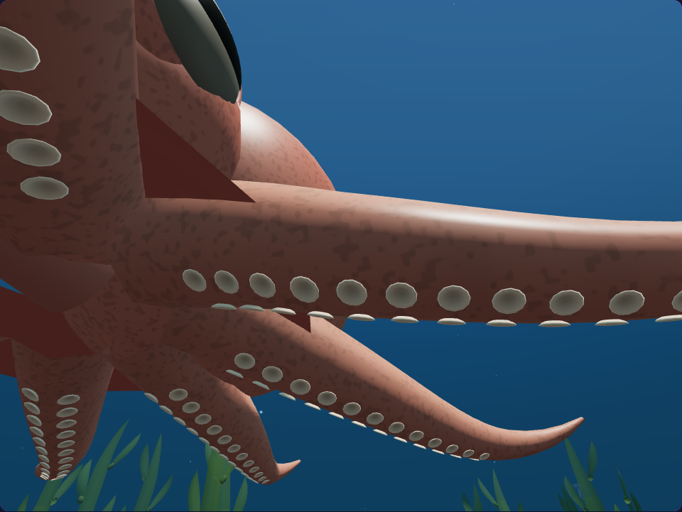
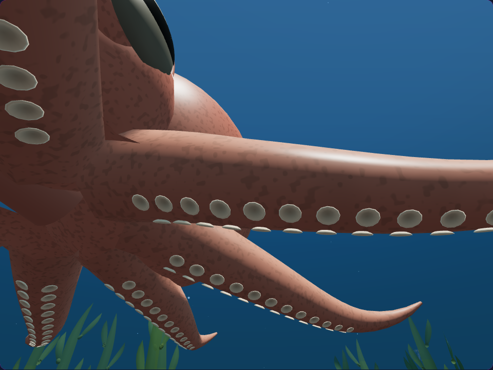
Curved, scalloped webbing follows six reef octopuses as they move. Matching skin patterns make the transition from arm to membrane feel continuous.
Common octopus · close-up


Giant Pacific octopus · close-up
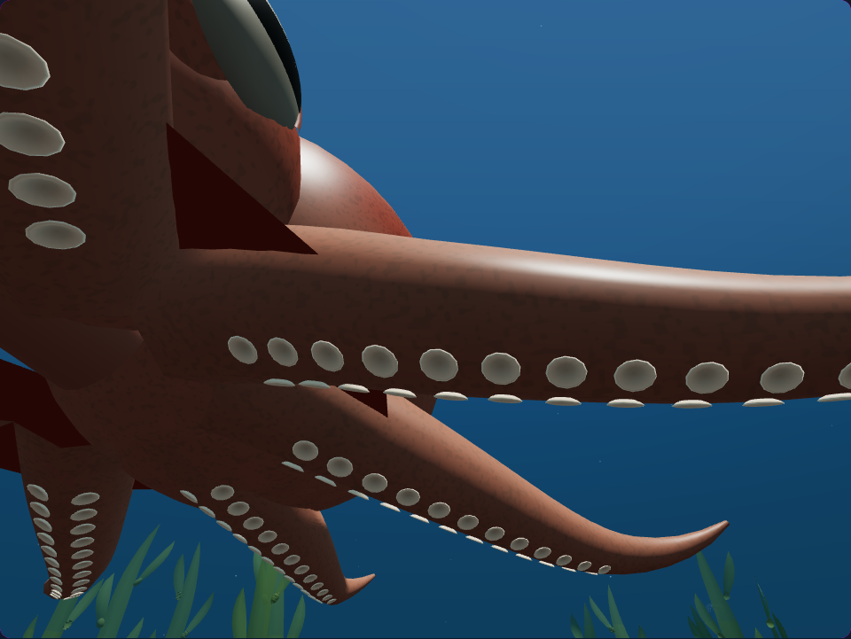
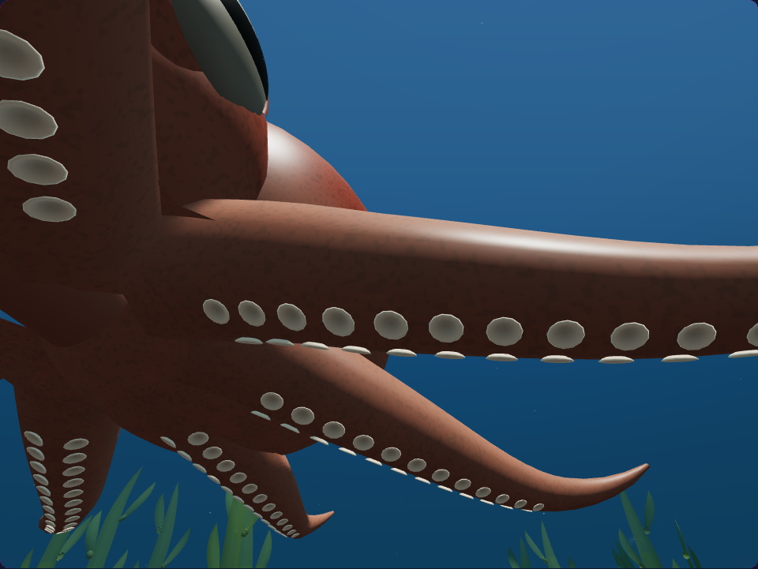
Blue-ringed octopus · phone close-up
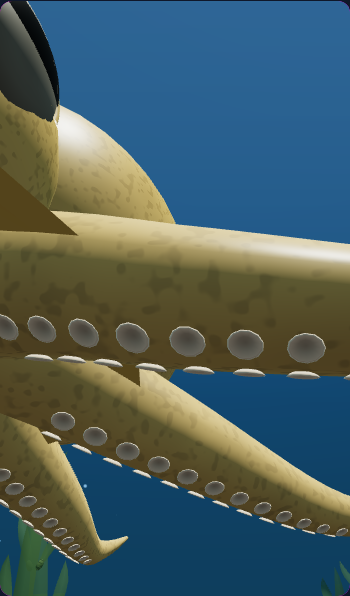
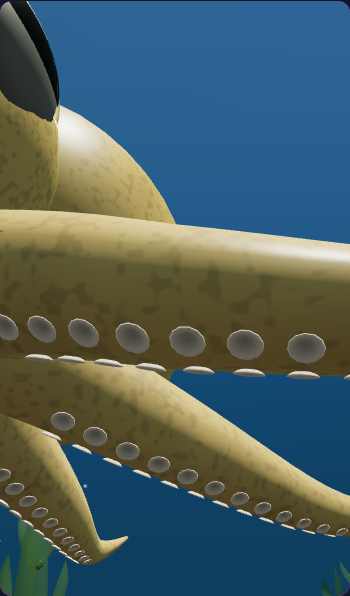
Common octopus · underside
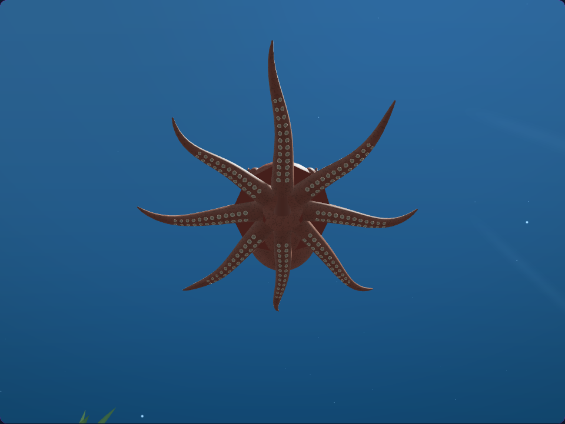
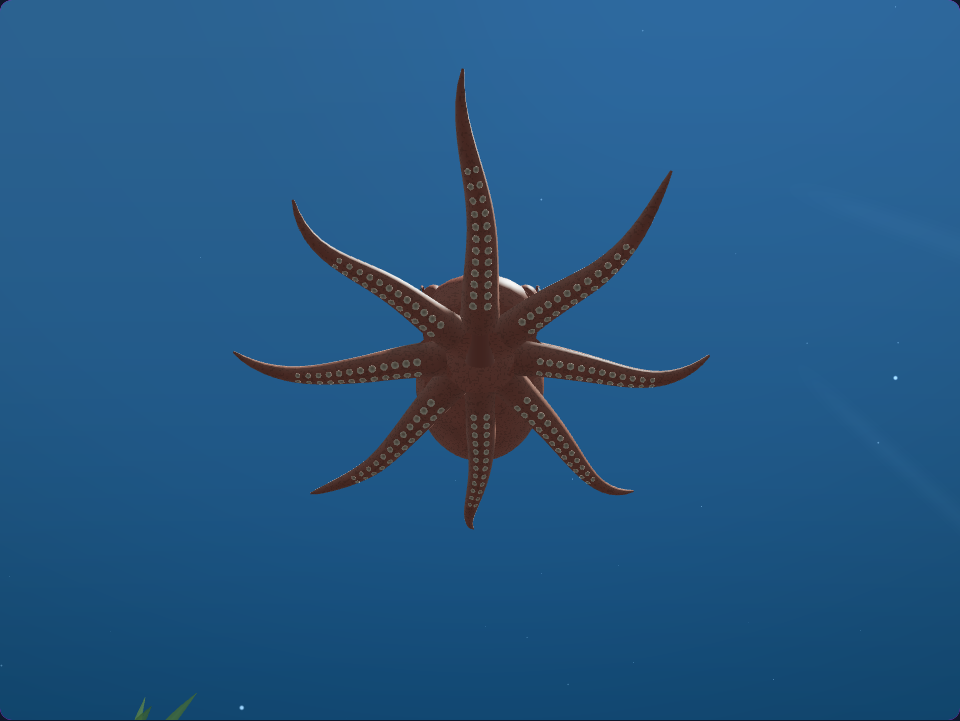
Giant Pacific octopus · underside
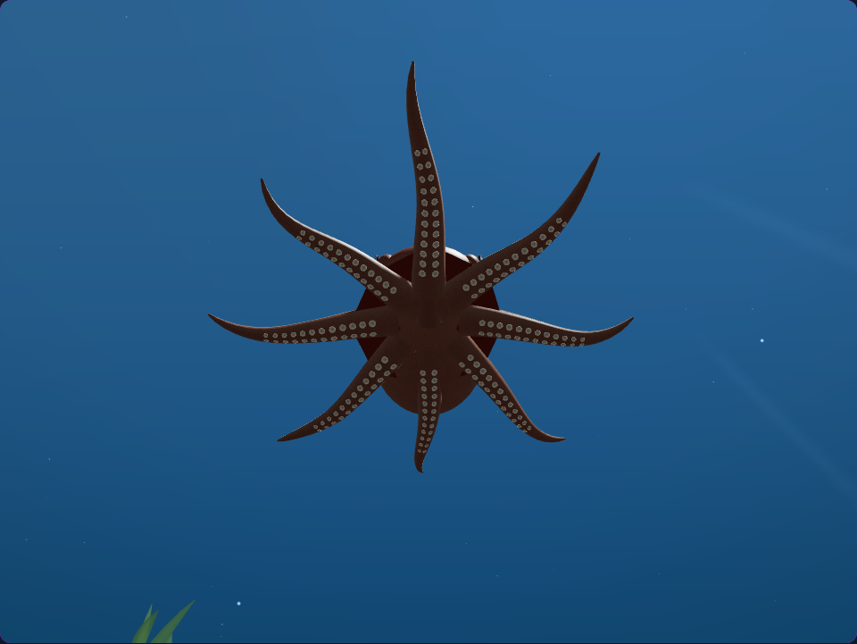
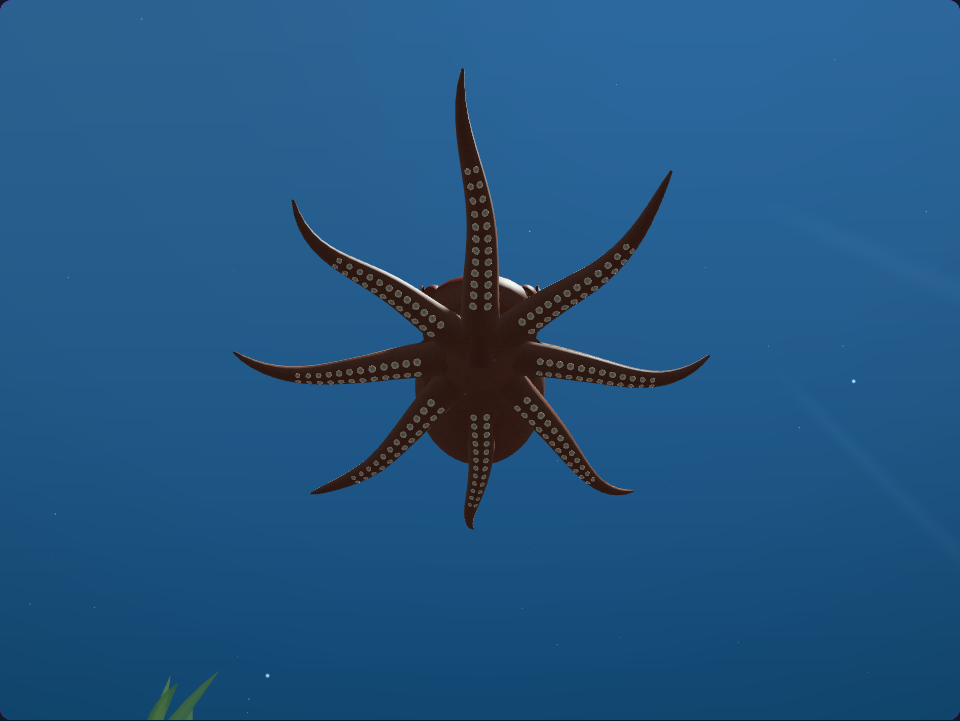
Blue-ringed octopus · phone underside
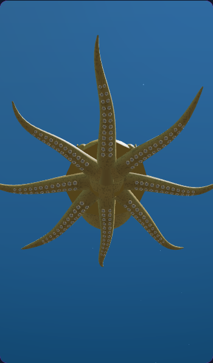
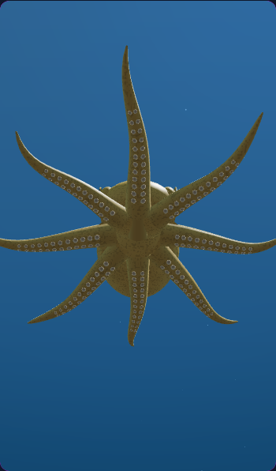
Common octopus · gameplay camera
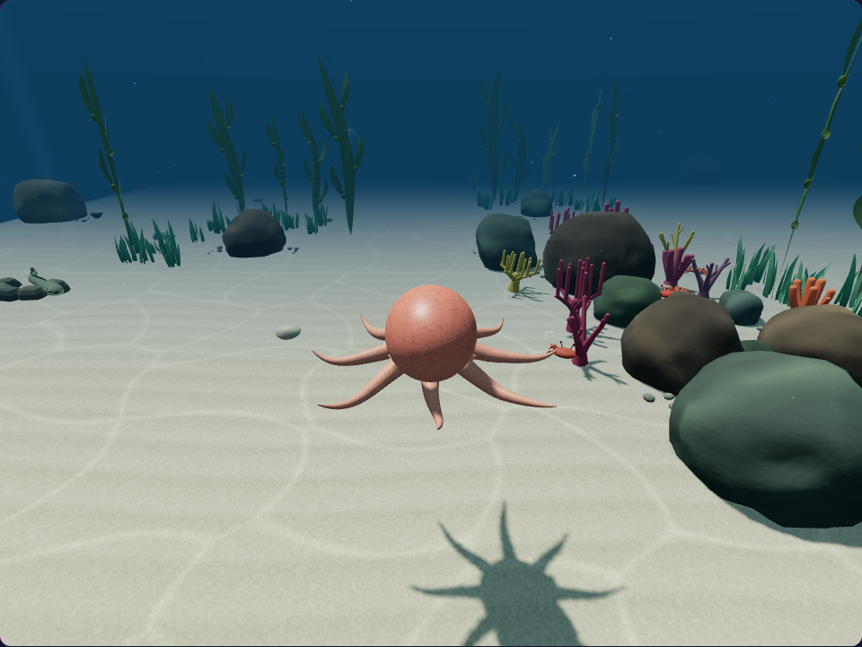

Giant Pacific octopus · gameplay camera
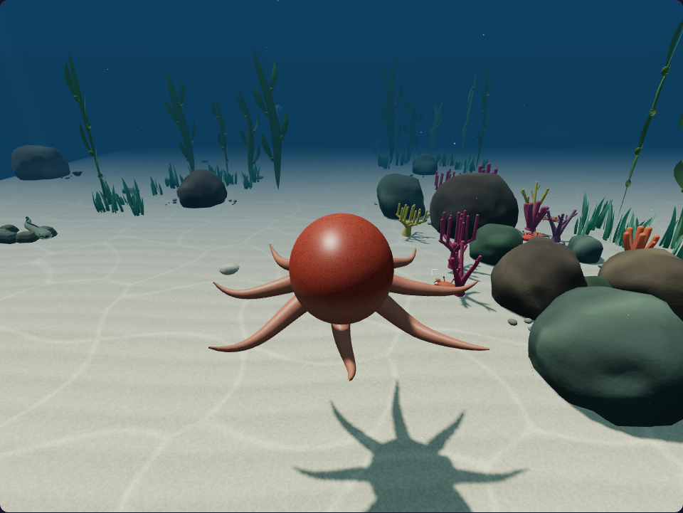
Blue-ringed octopus · gameplay camera
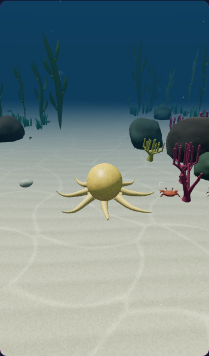
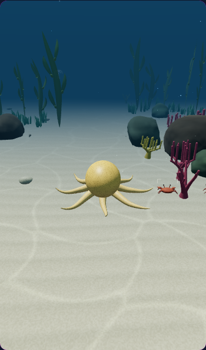
270 targeted CPU tests and 7 native browser checks passed. Checks include membrane topology and attachments, GPU skin shading, the existing sucker cups, swimming, jetting, pause, inspection, reduced motion, targeting and cleanup.
Each pair uses the same world, camera and simulation time. The animals rise using the actual Q control before the dive is paused. Dive images use the gameplay camera; close-ups and underside views use diagnostic cameras. No animal or scenery is repositioned for a comparison. The before images reuse the accepted previous captures, with verified matching source, camera and world state.
The web retains its existing mesh and material. Its smoother shape adds 640 triangles per octopus, with no additional draw calls or textures. Hardware frame rate and audio quality were not measured.